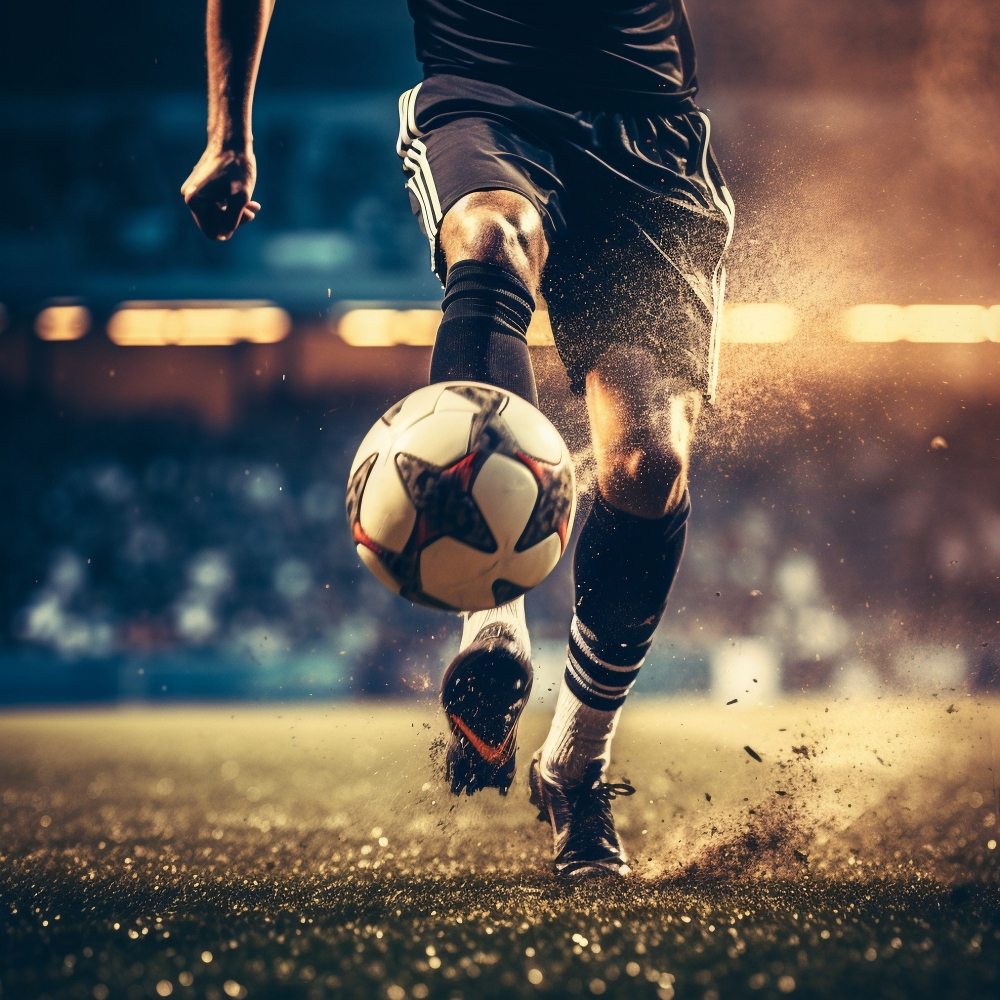

Noticias Cidade
Ultimas noticias Hugo Souza
Noticia Sobre Futebol Hugo Souza
O Corinthians vive um momento desafiador no Campeonato Brasileiro, ocupando a 17ª posição e enfrentando a zona de rebaixamento. Com 29 pontos em 28 rodadas, a equipe precisa urgentemente de uma reação para evitar a queda para a Série B.
Sob o comando de Ramon Dias, que assumiu recentemente a equipe, o time buscou reencontrar o caminho das vitórias, mas no último jogo, um empate em 1 a 1 contra o Internacional deixou os torcedores frustrados. O resultado, embora melhor do que uma derrota, não foi suficiente para aliviar a pressão sobre o elenco e a comissão técnica.
Ramon tem trabalhado para ajustar a defesa, que ainda enfrenta dificuldades, além de buscar uma maior eficiência no ataque. "Precisamos de consistência e determinação para sair dessa situação", afirmou o técnico em coletiva após a partida.
O próximo desafio do Corinthians será contra o Atlético Paranaense, um confronto crucial que pode ser decisivo para as aspirações do Timão na competição. A vitória é vital para reanimar as esperanças da torcida e afastar o risco de rebaixamento. Os torcedores, sempre apaixonados, se mobilizam para apoiar o time na Arena Corinthians, acreditando que o novo comando pode fazer a diferença.
A diretoria também já começou a planejar reforços para o mercado de janeiro, visando fortalecer o elenco e garantir a permanência na Série A. A expectativa é que Ramon Dias consiga implementar suas ideias rapidamente e resgatar o Corinthians nesta fase crítica.
Com um calendário apertado e a pressão crescendo, cada ponto se torna vital. O desafio é imenso, mas a torcida permanece esperançosa em ver o Timão reverter a situação e voltar a brigar por posições mais altas na tabela.